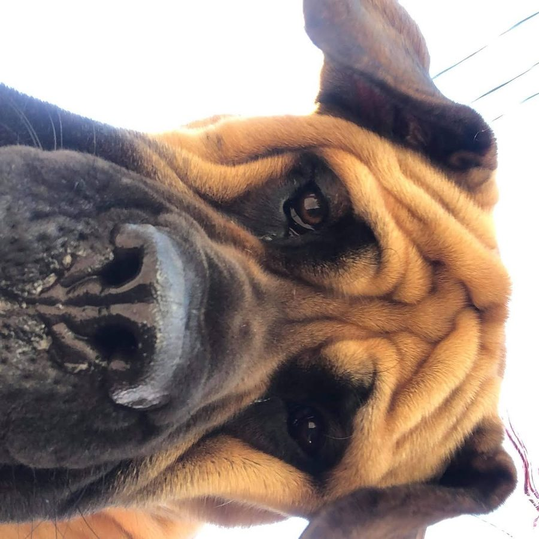

Program 03
Advanced Obedience
Higher standards and off-leash reliability for dogs ready for the next level.
Overview
Reliable when it counts.
Advanced Obedience asks the harder question: can your dog stay reliable when almost everything around it is competing for its attention?
This course is not about more commands. It makes what your dog already knows dependable at a distance, for longer, around real distractions and in unfamiliar places. A down-stay in an empty room is a skill. A down-stay held while you walk away and another dog passes is reliability.
Who it is for
- Graduates of ACA Basic Obedience, or dogs with an equivalent training history.
- Teams that want dependable public obedience, longer and more distant stays, a strong recall and, where appropriate, off-leash reliability.
- Handlers ready to take on more responsibility. At this level you are learning to train your dog, not only to follow instructions.

What is covered
Distance, duration, distraction.
What your dog will learn
- Distance and duration work: long sit and down stays with you at a distance, position changes at a distance, and extended place work at home and in public
- Distraction proofing: each behaviour tested against food, toys, people, dogs and busy places
- A recall that works away from food, toys, people and dogs, plus a separate emergency recall
- Neutrality around other dogs, and calm, functional behaviour in busy public places
- Off-leash reliability goals: off-leash work only where it is legal, safe and earned
What you will learn
- Handler precision and polish: precision heelwork with turns, halts and pace changes
- Cleaner cues, timing and reinforcement
- Raising and lowering difficulty one variable at a time
- Recognizing stress and over-arousal
- Managing your dog around distractions
- Using freedom responsibly
How it works
Climbing the proofing ladder.
- Entry and reliability assessment. This is not the graduation test. A dog can start with weaknesses; the assessment finds them before more difficulty hides them. Depending on the result, a dog may start as planned, start with conditions, go back to Basic Obedience for targeted work, or be referred for a rehabilitation or veterinary assessment.
- The ACA Proofing Ladder. Each behaviour climbs from controlled settings to real-world conditions with several distractions at once. Difficulty increases one variable at a time.
- Built into daily life. Training happens in the places you actually go, not only on a training field.
- Final real-world assessment. Skills are tested together in a new public place: arrival, movement, obedience, distraction, recall, freedom where appropriate, and recovery.
Expectations for graduation
Freedom is earned through reliability.
Graduation is based on demonstrated reliability, not a number of lessons. Your dog is tested against measurable benchmarks in a final real-world assessment. The headline benchmarks are below; the trainer may adjust a benchmark for age, physical ability or temperament. Distances are approximate.
- Stays2-minute sit stay and 5-minute down stay with you at least 30 feet (9 m) away, through at least 3 controlled distractions.
- PlaceHolds place for 10 minutes with you at a distance and environmental distractions around.
- Loose leash and heel10 minutes of functional loose-leash walking, and 3 minutes of heelwork with turns, stops and distractions, with no food lure.
- Recall8 of 10 recalls from about 30 feet (9 m) on one cue, and 4 of 5 away from food, toys, people or another dog.
- Emergency recall5 of 5 controlled repetitions: immediate, fast and direct.
- Leave it and impulse control8 of 10 on each, without you physically removing your dog.
- Dog neutralityStays functional and responsive around another dog in 4 of 5 controlled exposures.
- Public obedienceAt least 5 different behaviours over 20 minutes in a new public place.
- GeneralizationCore skills shown in at least 4 environments with 80% or better success.
- RecoveryComes back to work after a controlled exciting event in 4 of 5 trials.
- Off-leash reliabilityOnly where legal and appropriate: check-ins, recall and response to cues at 80% or better. The trainer has the final say.
- You, the handlerRun a 10 to 15 minute training session on your own, without continuous trainer help.
Safety comes before the score. A serious safety or control failure, such as bolting, a safety-critical recall failure or aggression, means the team is not ready yet, even with a high score. It is not a punishment. It shows us what to train next, and the team can be reassessed once it is addressed.
Mistakes are allowed. One slow sit, a broken stay or a moment of distraction is normally a training error, not a fail.
After graduation: graduates are ready for ongoing maintenance: regular proofing in real places and periodic check-ins. Reliability fades if it is not maintained.
Ready for the next level?
Tell us about your dog’s training so far and what you want to achieve. We typically respond within 1 to 2 business days.
All programs